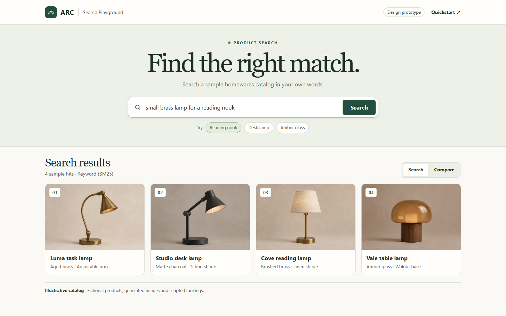

README.md
Adaptive Retrieval Core
Compare how search strategies rank the same query. ARC is a retrieval core with one API for keyword, dense, hybrid, and reranked search.

Compare how search strategies rank the same query. ARC is a retrieval core with one API for keyword, dense, hybrid, and reranked search.
